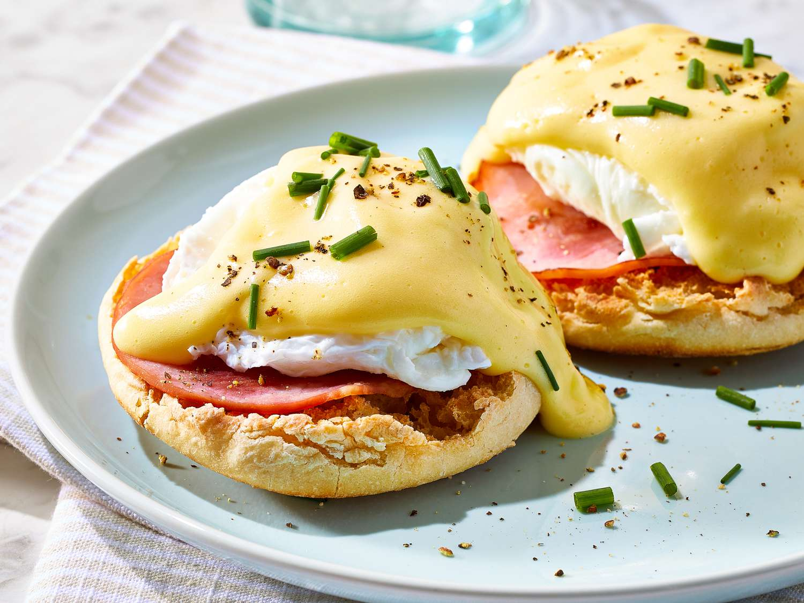

Eggs Benedict Recipe

Eggs Benedict is a dish consisting of poached eggs and sliced ham on toasted English muffins, covered with hollandaise sauce.
Ingredients
- For the Hollandaise: egg yolks, lemon juice, water, Worcestershire sauce, white pepper, butter, and salt.
- For the eggs Benedict: distilled white vinegar, eggs, Canadian-style bacon, English muffins, and butter.
Steps
- Make the Hollandaise sauce.
- Poach the eggs.
- Make the ricotta mixture.
- Brown the Canadian-style bacon and toast the English muffins.
- Assemble the eggs Benedict.
Home